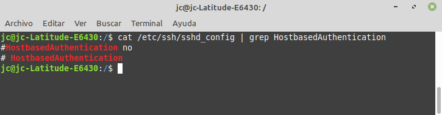
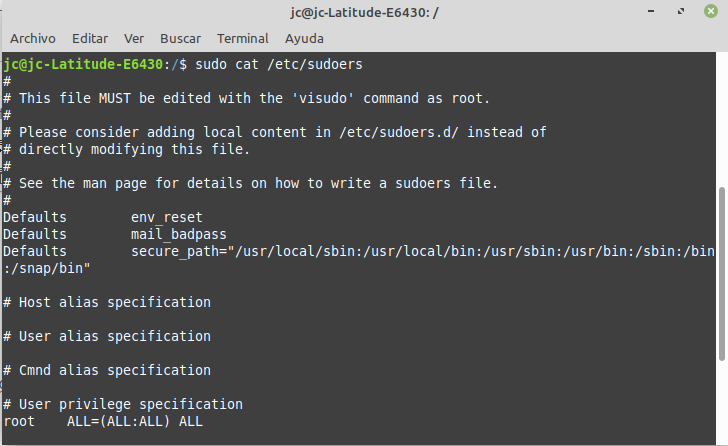
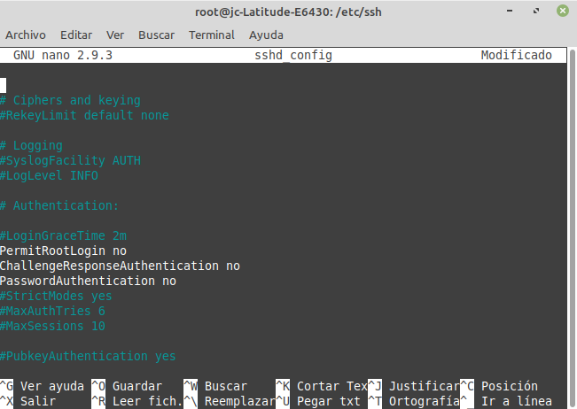
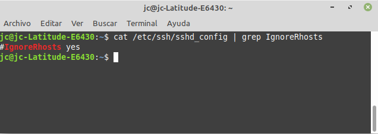
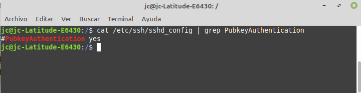
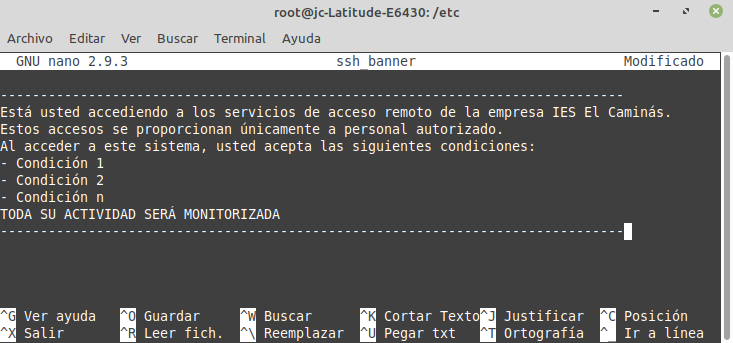

3.1.5 Fortificación de SSH
1. Introducción
Los servidores más utilizados son los siguientes:
- Servidores SSH de ámbito general: OpenSSH.
- Servidores SSH para sistemas embebidos: Dropbear SSH (GitHub).
2. Acciones a realizar
Es importante y necesario realizar una serie de acciones para fortificar este sistema de acceso remoto. Para ello, en los siguientes apartados, se describen una serie de acciones a realizar.
2.1 Deshabilitar
1. El servidor SSH en portátiles y otros clientes.
2. Otros protocolos no seguros. Algunos de estos servicios incluyen:
- telnet
- rsh
- rlogin
- ftpd
3. La autenticación basada en host. Hay que editar el fichero de configuración sshd_config (que se encuentra en /etc/ssh) y el parámetro HostbasedAuthentication se define con no.

4. El inicio de sesión con root. Se tiene que deshabilitar el inicio de sesión con root. Para ello, hay que acceder al sistema con otro usuario que pueda elevar privilegios y revisar la configuración de /etc/sudoers.

Hay que editar el fichero de configuración sshd_config, y configurar los parámetros siguientes de esta manera:
PermitRootLogin no
ChallengeResponseAuthentication no
PasswordAuthentication no

5. El inicio de sesión mediante contraseña
Hay que editar el fichero de configuración sshd_config los parámetros AuthenticationMethods y PubkeyAuthentication. Los valores son los siguientes.
AuthenticationMethods publickey
PubkeyAuthentication yes
6. Contraseñas vacías
Hay que editar el fichero de configuración sshd_config, y el parámetro PermitEmptyPasswords se configura de la siguiente manera.
PermitEmptyPasswords no
7. Redireccionamiento de puertos
Hay que editar el fichero de configuración sshd_config, y configurar los siguientes parámetros:
AllowTcpForwarding no
AllowStreamLocalForwarding no
GatewayPorts no
PermitTunnel no
Puede resultar de utilidad en algunos casos, pero en otros tener consecuencias nefastas (ejemplo: redireccionamiento SSH inverso.
2.2 Comprobar
- Que estén deshabilitados los ficheros .rhosts
- Fichero sshd_config --> parámetro IgnoreRhosts yes

2.3 Iniciar sesión
Inicia sesión mediante clave pública.
jc@jc-Latitude-E6430:/$ssh-keygen -t key_type -b bits -C "comentario"
jc@jc-Latitude-E6430:/$ssh-copy-id -i /directorio/fichero_clave_publica user@host
Hay que editar el fichero de configuración sshd_config, y añadir al parámetro PubkeyAuthentication la opción yes.

2.4 Utilizar contraseñas seguras
Hay que utilizar contraseñas seguras para usuarios del sistema y también para passphrase de las claves privadas
- makepasswd
- mkpasswd
- pwgen genera contaseñas pronunciables.
2.5 Limitar el acceso
Es necesario limitar el acceso por ssh a ciertos usuarios.
Hay que editar el fichero de configuración sshd_config, y el parámetro AllowUsers se configura de la siguiente manera.
AllowUsers user-01 user-02
Hay otra alternativa de realizar lo mismo, hay que editar el fichero de configuración sshd_config y el parámetro DenyUsers se configura de la siguiente manera (es lo inverso):
DenyUsers root user-03 user-04
También se puede realizar con grupos en lugar de usuarios:
Directivas
AllowGroups y DenyGroups
2.6 Utilizar TCP Wrappers
Un TCP Wrapper es una biblioteca que provee un control de acceso simple y permite la administración de logs estandarizada para aplicaciones que lo soporten, y reciban conexiones de red.
Aquellas aplicaciones de red que puedan recibir conexiones, como los servicios de red (sshd por ejemplo), si soportan TCP Wrappers, se podrán realizar algunos controles y logs adicionales con las conexiones entrantes.
En resumen, es un sistema de listas de control de acceso (ACLs) a redes basado en host.
Hay que editar el fichero de configuración /etc/hosts.allow y añadir lo siguiente:
# Se permiten a todos los equipos de la subred 192.168.10.0
sshd : 192.168.10.0/255.255.255.0
ALL : localhost
Hay que editar el fichero de configuración /etc/hosts.deny hay añadir lo siguiente:
ALL: ALL
2.7 Utilizar un puerto NO estándar - Port-knocking
El port-knocking está considerado como seguridad por ocultación. La mejor opción es: Single Packet Authoritation (SPA) - fwknop (Web)
Es interesante utilizar un puerto no estándar y atender en una sola interfaz de red. Hay que editar el fichero de configuración sshd_config y añadir lo siguiente:
Port 32
ListenAddress 192.168.10.5
Puedes consultar el listado de puertos bien conocidos aquí
Utilizar un puerto diferente del 22 puede ser considerado seguridad por ocultación.
2.8 Filtrar el puerto de ssh en el Firewall
Escenario: La red de trabajo es la 192.168.10.0/24.
En el firewall de la red, hay que configurar que todas las conexiones que no tengan origen en 192.168.10.0/24 no serán aceptadas. Para conseguirlo, en UFW en Debian/Ubuntu, hay que ejecutar el siguiente comando:
jc@jc-Latitude-E6430:/$sudo ufw allow from 192.168.10.0/24 to any port 22
Con Reglas Netfilter (iptables), hay que ejecutar el siguiente comando:
jc@jc-Latitude-E6430:/$sudo iptables -A INPUT -s 192.168.10.0/24 -m state --state NEW -p tcp --dport 22 -j ACCEPT
2.9 Definir inactividad
Otra de las cosas que hay que realizar, es, definir un intervalo de inactividad. Para ello, hay que editar el fichero de configuración sshd_config y añadir lo siguiente:
ClientAliveInterval 300
ClientAliveCountMax 0
2.10 Limitar velocidad entrante
En realidad, lo que se desea realizar es limitar el número de conexiones por intervalo de tiempo. A continuación, se detallan los scripts a implementar:
#!/bin/bash
inet_if=enps03
ssh_port=22
IPT='/sbin/iptables'
$IPT -I INPUT -p tcp --dport ${ssh_port} -i ${inet_if} -m state --state NEW -m recent --set
$IPT -I INPUT -p tcp --dport ${ssh_port} -i ${inet_if} -m state --state NEW -m recent --update --seconds 60 --hitcount 5 -j DROP
#!/bin/bash
inet_if=enps03
ssh_port=22
IPT='/sbin/iptables'
$IPT -A INPUT -i ${inet_if} -p tcp --dport ${ssh_port} -m state --state NEW -m limit --limit 3/min --limit-burst 3 -j ACCEPT
$IPT -A INPUT -i ${inet_if} -p tcp --dport ${ssh_port} -m state --state ESTABLISHED -j ACCEPT
$IPT -A OUTPUT -o ${inet_if} -p tcp --sport ${ssh_port} -m state --state ESTABLISHED -j ACCEPT
#!/bin/bash
inet_if=enps03
ssh_port=22
IPT='/sbin/iptables'
$IPT -A INPUT -i ${inet_if} -m state --state NEW,ESTABLISHED,RELATED -p tcp --dport 22 -m limit --limit 5/minute --limit-burst 5 -j ACCEPT
2.11 Frustrar los ataques de fuerza bruta
Se estudiarán en apartados posteriores:
2.12 Limitar el máximo de intentos de autenticación
Hay que editar el fichero de configuración sshd_config y añadir lo siguiente, donde 3 es el número máximo de intentos que se propone como ejemplo:
MaxAuthTries 3
2.13 Configurar un banner de SSH personalizado
Hay que editar el fichero de configuración sshd_config y que añadir lo siguiente:
Banner /etc/ssh_banner
Hay que crear un fichero en /etc con el nombre ssh_banner con el contenido que se desea, ejemplo:
jc@jc-Latitude-E6430:/$sudo nano /etc/ssh_banner

2.14 Mantener los usuarios dentro de su $HOME para SFTP
Hay que editar el fichero de configuración sshd_config y que añadir lo siguiente suponiendo que se tiene el usuario user01.
Match Group group01
ChrootDirectory /home
AllowTCPForwarding no
X11Forwarding no
ForceCommand /usr/lib/openssh/sftp-server
Se utilizan la directiva Match en un grupo en lugar de un usuario, de esta forma, se aplica a todos los usuarios que pertenezcan a ese grupo.
Chroot environment for SSH. Manual de seguridad de Debian
2.15 Mantener SSH actualizado
jc@jc-Latitude-E6430:/$sudo apt update
jc@jc-Latitude-E6430:/$sudo apt upgrade
3. Consejos
3.1 Consejos de Mozilla
Accede a esta url: https://infosec.mozilla.org/guidelines/openssh
3.2 Consejos de ssh-audit
Para Ubuntu Server 20.04 LTS: https://www.sshaudit.com/hardening_guides.html#ubuntu_20_04_lts
- Regenera las claves RSA y ED25519.
- Borra los grupos Diffie-Hellman pequeños.
- Habilita las claves RSA y ED25519.
- Restringe los algoritmos de intercambio de claves, cifrado y MAC (Códigos de autenticación de mensajes) admitidos.
4. Referencias
Obra publicada con Licencia Creative Commons Reconocimiento No comercial Compartir igual 4.0